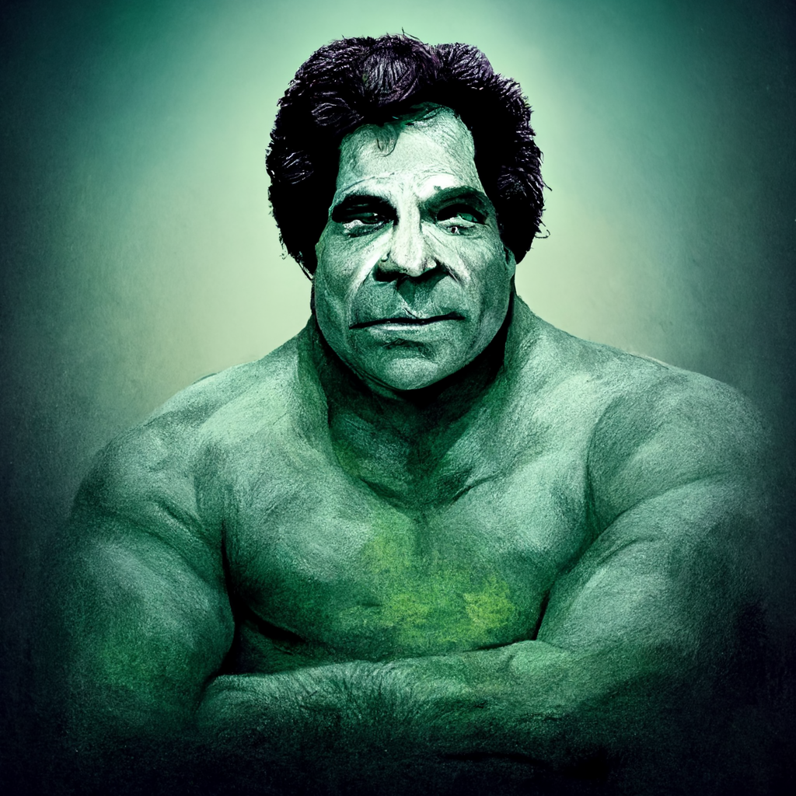
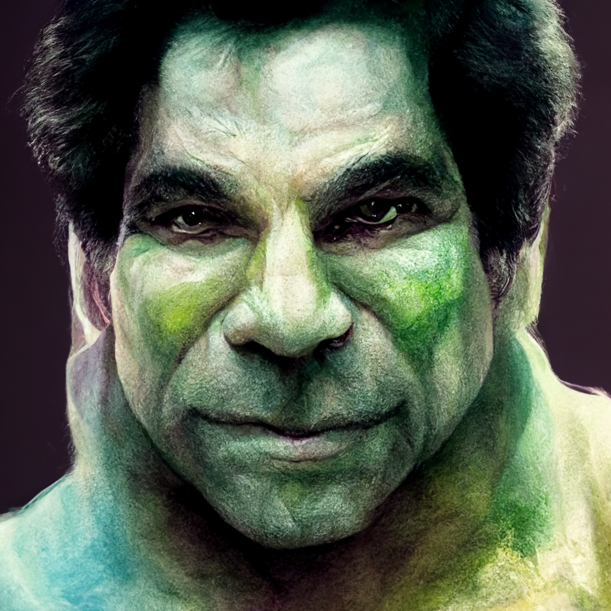
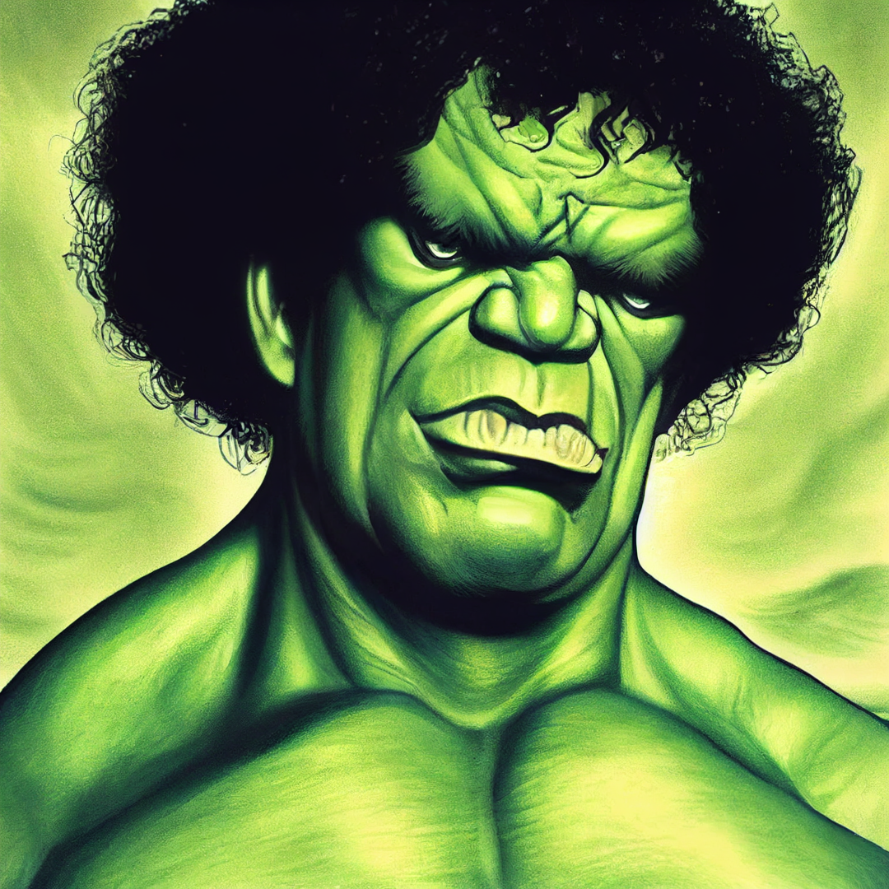

Lou Ferrigno as the Hulk



Related posts


Incredible Hulk Madlibs for Puny Humans
Using the definitions provided, and your inner rampaging jade giant , fill out the boxes below with the correct type…


Andre the Giant as the Incredible Hulk
Andre the Giant did not play Bigfoot on the 1970's Incredible Hulk show. That was a different guy. Andre played…